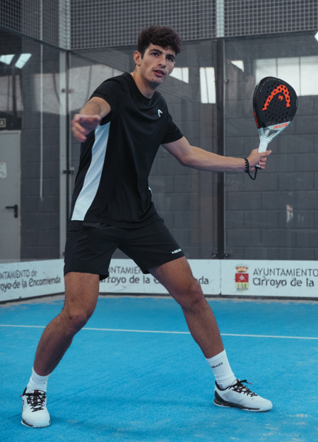

MASCULINO
Un deporte que ha cobrado gran relevancia en los últimos años es el pádel. Y es que no solo resulta ser desafiante, también es muy divertido. Además, de que incentiva la convivencia creando espacios sociales donde podemos conocer a nuevas personas, amigos y socios. Debido a que el pádel exige que nos movamos de un lado a otro, estemos en alerta y soltemos golpes con el brazo, este deporte activa todo el cuerpo. Exige que tanto distintos músculos y órganos como los pulmones den lo mejor de sí para soportar tanto movimiento tan rápido.
Arturo Coello Arturo Coello Manso, conocido como Arturo Coello, es un jugador profesional de pádel español, que en la actualidad ocupa la 1.ª posición en el ranking World Padel Tour. Su pareja deportiva actual es Agustín Tapia, juntos forman la mejor pareja de pádel del mundo. |
Paquito Navarro Francisco Jesús Navarro Compán, más conocido como Paquito Navarro, es un jugador profesional de pádel español que ocupa la 9.ª posición del ranking World Padel Tour. Juega en el revés junto al argentino Federico Chingotto, con quien se unió tras haberse disputado los 4 primeros torneos de WPT de 2023. |
|---|